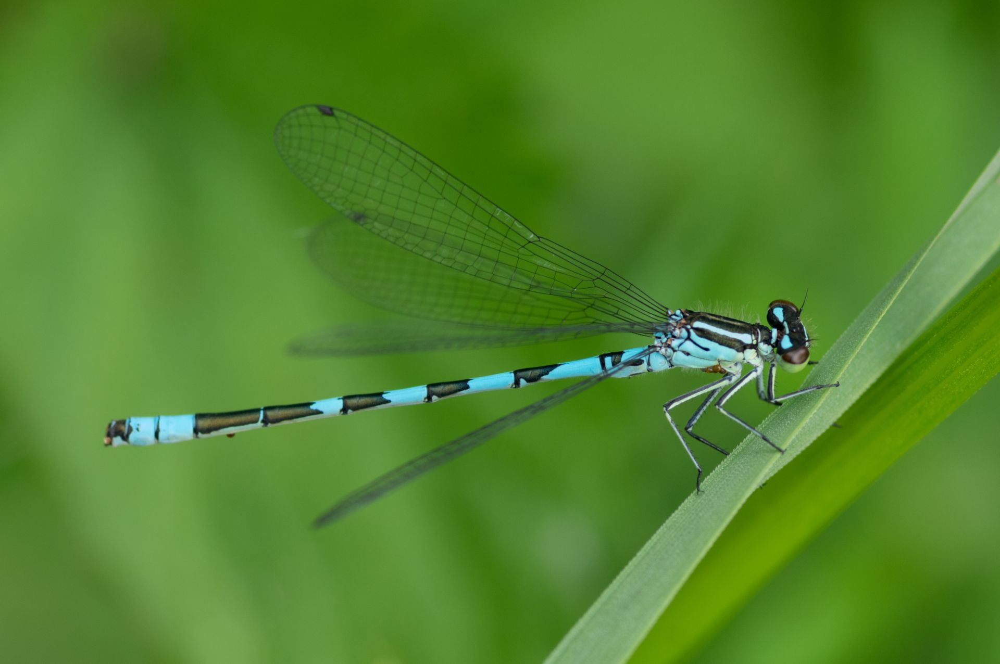

Photos de l'Agrion à fer de lance
Découvrez les différentes images de l’Agrion à fer de lance dans son habitat naturel.



Découvrez les différentes images de l’Agrion à fer de lance dans son habitat naturel.